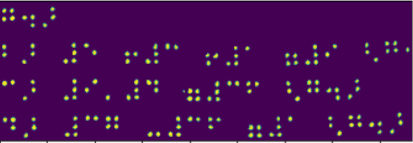

Introduction to Computer Vision
Computer Vision is a discipline whose aim is to allow computers to gain high-level understanding of digital images. This is quite a broad definition, because understanding can mean many different things, including finding an object on a picture (object detection), understanding what is happening (event detection), describing a picture in text, or reconstructing a scene in 3D. There are also special tasks related to human images: age and emotion estimation, face detection and identification, and 3D pose estimation, to name a few.
Pre-lecture quiz
One of the simplest tasks of computer vision is image classification.
Computer vision is often considered to be a branch of AI. Nowadays, most of computer vision tasks are solved using neural networks. We will learn more about the special type of neural networks used for computer vision, convolutional neural networks, throughout this section.
However, before you pass the image to a neural network, in many cases it makes sense to use some algorithmic techniques to enhance the image.
There are several Python libraries available for image processing:
- imageio can be used for reading/writing different image formats. It also support ffmpeg, a useful tool to convert video frames to images.
- Pillow (also known as PIL) is a bit more powerful, and also supports some image manipulation such as morphing, palette adjustments, and more.
- OpenCV is a powerful image processing library written in C++, which has become the de facto standard for image processing. It has a convenient Python interface.
- dlib is a C++ library that implements many machine learning algorithms, including some of the Computer Vision algorithms. It also has a Python interface, and can be used for challenging tasks such as face and facial landmark detection.
OpenCV
OpenCV is considered to be the de facto standard for image processing. It contains a lot of useful algorithms, implemented in C++. You can call OpenCV from Python as well.
A good place to learn OpenCV is this Learn OpenCV course. In our curriculum, our goal is not to learn OpenCV, but to show you some examples when it can be used, and how.
Loading Images
Images in Python can be conveniently represented by NumPy arrays. For example, grayscale images with the size of 320x200 pixels would be stored in a 200x320 array, and color images of the same dimension would have shape of 200x320x3 (for 3 color channels). To load an image, you can use the following code:
import cv2
import matplotlib.pyplot as plt
im = cv2.imread('image.jpeg')
plt.imshow(im)
Traditionally, OpenCV uses BGR (Blue-Green-Red) encoding for color images, while the rest of Python tools use the more traditional RGB (Red-Green-Blue). For the image to look right, you need to convert it to the RGB color space, either by swapping dimensions in the NumPy array, or by calling an OpenCV function:
im = cv2.cvtColor(im,cv2.COLOR_BGR2RGB)
The same cvtColor function can be used to perform other color space transformations such as converting an image to grayscale or to the HSV (Hue-Saturation-Value) color space.
You can also use OpenCV to load video frame-by-frame - an example is given in the exercise OpenCV Notebook.
Image Processing
Before feeding an image to a neural network, you may want to apply several pre-processing steps. OpenCV can do many things, including:
- Resizing the image using
im = cv2.resize(im, (320,200),interpolation=cv2.INTER_LANCZOS) - Blurring the image using
im = cv2.medianBlur(im,3)orim = cv2.GaussianBlur(im, (3,3), 0) - Changing the brightness and contrast of the image can be done by NumPy array manipulations, as described in this Stackoverflow note.
- Using thresholding by calling
cv2.threshold/cv2.adaptiveThresholdfunctions, which is often preferable to adjusting brightness or contrast. - Applying different transformations to the image:
- Affine transformations can be useful if you need to combine rotation, resizing and skewing to the image and you know the source and destination location of three points in the image. Affine transformations keep parallel lines parallel.
- Perspective transformations can be useful when you know the source and destination positions of 4 points in the image. For example, if you take a picture of a rectangular document via a smartphone camera from some angle, and you want to make a rectangular image of the document itself.
- Understanding movement inside the image by using optical flow.
Examples of using Computer Vision
In our OpenCV Notebook, we give some examples of when computer vision can be used to perform specific tasks:
- Pre-processing a photograph of a Braille book. We focus on how we can use thresholding, feature detection, perspective transformation and NumPy manipulations to separate individual Braille symbols for further classification by a neural network.
 |
 |  |
|---|---|---|
Image from OpenCV.ipynb
- Detecting motion in video using frame difference. If the camera is fixed, then frames from the camera feed should be pretty similar to each other. Since frames are represented as arrays, just by subtracting those arrays for two subsequent frames we will get the pixel difference, which should be low for static frames, and become higher once there is substantial motion in the image.

Image from OpenCV.ipynb
-
Detecting motion using Optical Flow. Optical flow allows us to understand how individual pixels on video frames move. There are two types of optical flow:
-
Dense Optical Flow computes the vector field that shows for each pixel where is it moving
- Sparse Optical Flow is based on taking some distinctive features in the image (eg. edges), and building their trajectory from frame to frame.

Image from OpenCV.ipynb
✍️ Example Notebooks: OpenCV try OpenCV in Action
Let's do some experiments with OpenCV by exploring OpenCV Notebook
Conclusion
Sometimes, relatively complex tasks such as movement detection or fingertip detection can be solved purely by computer vision. Thus, it is very helpful to know the basic techniques of computer vision, and what libraries like OpenCV can do.
🚀 Challenge
Watch this video from the AI show to learn about the Cortic Tigers project and how they built a block-based solution to democratize computer vision tasks via a robot. Do some research on other projects like this that help onboard new learners into the field.
Post-lecture quiz
Review & Self Study
Read more on optical flow in this great tutorial.
Assignment
In this lab, you will take a video with simple gestures, and your goal is to extract up/down/left/right movements using optical flow.